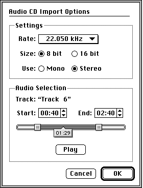

|
|
This Note is a technical discussion of the changes between QuickTime 1.5 and QuickTime 1.6.1. QuickTime 1.6.1
introduces some new QuickTime features, new Component Manager features, and better reliability than other
QuickTime versions.
[Jun 01 1993]
|
QuickTime 1.6.1 Features
The new features of QuickTime 1.6.1 are fully described in this Note. These new
features are logically divided into two sections: "Features You Get for Free"
and "Features You Get With Some Code."
This Note assumes the reader is QuickTime-literate. If this Note does not
suffice, refer to Inside Macintosh, QuickTime and Inside
Macintosh, QuickTime Components. In addition, most QuickTime questions are
answered through rummaging through the sample code and/or applications on the
QuickTime 1.5 and the QuickTime 1.0 CDs.
QuickTime 1.6.1 fixes a problem that was uncovered in QuickTime 1.6 between
QuickTime and the Alias Manager (the problem was most noticeable with various
commercial utilities) and enhances the appearance of high resolution Photo CD
images. QuickTime 1.6.1 is the currently supported version of QuickTime.
Back to top Features You Get for Free
This section describes the features of QuickTime 1.6.1 that are added transparently
to QuickTime. In general, you will not have to do anything to your application for these
features. But the user may have to install a specific extension and/or have the appropriate
equipment. QuickTime 1.6.1 exploits these software extensions: Sound Manager, Macintosh Easy Open,
and ColorSync. As far as hardware, QuickTime 1.6.1 has code that takes advantage of the Apple CD 300,
grayscale, Macintosh PowerBook and PowerBook Duo computers, Macintosh LC II class machines,
Macintosh Quadra computers, and stereo output devices.
Reduced Memory Footprint
QuickTime 1.6.1 code is segmented. QuickTime code segmentation allows unused
code segments to be unloaded when not in use. QuickTime 1.6.1 uses less than
18K when installed, whereas QuickTime 1.5 used approximately 160K.
Because of this segmentation, substantially less memory is required for movie
playback. If applications are not using a particular functionality, the
corresponding code segments may be unloaded. For example, movie editing code
will not be loaded unless the movie application requires it.
Sound Manager 3.0 Support
QuickTime 1.6.1 supports the new Sound Manager, version 3.0. The new Sound
Manager completely replaces the existing Sound Manager, and it will work with
all versions of QuickTime. If Sound Manager 3.0 is installed, QuickTime 1.6.1
will take advantage of its new features.
You can use QuickTime with Sound Manager 3.0 in the following ways:
- Export multiple sound tracks into one sound resource
An outstanding feature of the new Sound Manager is the ability to mix multiple sound tracks into
one sound resource.
- Play sound more efficiently
The new Sound Manager lessens the load on the CPU for sound. As a rule of
thumb, you will be able to get one extra frame per second for video playback.
- Support alternate sound output devices You can now hook up hardware to your Macintosh for CD-quality 16-bit 44 kHz stereo sound output.
- Allow better control over multiple sound channels
With Sound Manager 3.0, sound overdriving is possible. By setting the movie
volume above 1.0, the sound will actually be overdriven. To overdrive a movie's
sound, a user can hold down shift key and click on the sound icon of the movie
controller. The sound can be overdriven by a factor of 3.
- Support true balance control
The track balance of an audio track can now be proportionally panned left and
right, instead of just full left or full right.
- Handle sound mixing better
Better sound mixing improves the quality of multiple sound track playback.
- Use the new Sound control panel
You can choose the default sound output device.
Cinepak Enhancement
Compact Video is now called Cinepak. Cinepak playback to 16-bit destinations
(thousands of colors) is now of higher quality using an improved dithering algorithm.
Audio CD Import
A Movie Import component is provided that allows you to open audio CD tracks
from the QuickTime Standard File Preview dialog box, just as you could open
PICS and AIFF files with QuickTime 1.5. If you have an Apple CD 300 or CD 300i
drive, you can use QuickTime 1.6.1 to convert tracks of your favorite audio CD
directly into QuickTime movies.

Figure 1. Audio CD Import Options
When you try to open an audio track on an Apple CD 300i, the Open button will
change to a Convert... button. When you click this button, the Audio CD Import
Options dialog box will appear. With this dialog box, you can configure the
sound settings of the movie. The rate, size, and channel can be specified for
the movie. In addition, you can select the portion of the track that should
become a movie. You can select the start time and end time for the track. You
can play your selection to be sure you have the selection you want.
Macintosh Easy Open Support
QuickTime 1.6.1 fully supports Macintosh Easy Open. Macintosh Easy Open is an
Apple system extension that provides document and Clipboard translation for all
applications. If a user has Macintosh Easy Open installed in combination with
QuickTime 1.6.1, then he or she can copy and paste various media formats into
applications that do not support QuickTime.
QuickTime 1.5 contained translation components for importing and exporting
movie data from files and the Clipboard. QuickTime 1.6.1 provides a Macintosh
Easy Open translation component that makes all QuickTime Movie Import/Export
components work automatically with non-QuickTime-aware applications. For
example, you can paste a sound track into a sound editing application, and it
will translate the format from a QuickTime sound movie to a sound file.
QuickTime 1.6.1 includes support for importing sound, PICTs, and PICS. It also
supports exporting movies to PICT and sound. Additional MovieImport
and MovieExport components can be found on the QuickTime 1.5 Developer
CD in the Sample Components folder.
Text Track Export
A Text Movie Export component lets you easily extract text from movies. With
Macintosh Easy Open installed, you can copy a series of text frames from a movie
and paste them directly into any application that supports text, such as MPW.
Tear-free Movie Playback
Support has been added to the Image Compression Manager to reduce the tearing
that is visible when playing back movies with large amounts of motion. The
feature works only on machines with fast screen access, so it isn't usually
noticeable on NuBus video cards. Typically, better tear-free movie playback
will be seen on Cinepak movies in 16 bits on a Macintosh Quadra. A good movie
to look at to see the improvement is the beginning of "Everybody Loves Me But
You" on the QuickTime 1.5 Developer CD.
PowerBook Movie Playback Enhancements
The Macintosh PowerBook computers that use 4-bit grayscale (Macintosh PowerBook 160,
PowerBook 180, PowerBook Duo 210, PowerBook Duo 230) are supported using new fast dithering.
All decompressors transparently take advantage of this fast dithering.
YUV Codec
A YUV Compressor/Decompressor component is new in QuickTime 1.6.1. It stores
data in YUV 4:2:2 format. The compression algorithm is not lossless, but the
image quality is extremely high. The compression ratio is 3:2 (or 1.5:1). It
does not support frame differencing. It is useful with certain video input
solutions, such as the Macintosh Quadra 840AV and Centris 660AV. In addition,
it is also useful as an intermediate storage format if you are applying
multiple effects or transitions to an image.
By default, YUV does not appear in the Standard Compression dialog box. If you
hold down the Option key when clicking the compressor list to display the
complete list, it will appear.
Back to top Features You Get With Some Code
This section describes the features of QuickTime 1.6.1 that are not
added transparently to QuickTime. Your application will need new code to take
advantage of them. In this section, the use of these features is explained.
Movie Toolbox Enhancements
The Movie Toolbox has three new calls and two new flags.
showUserSettingsDialog is a new flag. When using either PasteHandleIntoMovie
or ConvertFileToMovieFile to import data into a movie, you can now set the
showUserSettingsDialog flag. This displays the user settings dialog box for
that import operation, if there is one. For example, when importing a picture, this
would cause the Standard Compression dialog box to be displayed so the compression
method could be selected.
showUserSettingsDialog = 2
hintsHighQuality is a new flag you may pass to the
SetMoviePlayHints and SetMediaPlayHints routines. It
specifies that the given movie or media should render at the highest quality.
Rendering at highest quality may take considerably more time and memory.
Therefore, this mode is typically not appropriate for real-time playback, but
is very useful for recompressing as it can generate higher quality images.
The high-quality mode can be used with other media handlers as well. For example,
the Video Media Handler turns off fast dithering and allows high-quality dithering.
Now we will introduce the three new Movie Toolbox calls.
SetMovieDrawingCompleteProc
SetMovieDrawingCompleteProc lets you set a callback procedure that is
called after a movie has drawn in one or more of its tracks. In this way, your
application can be aware of when QuickTime has drawn frames and when it hasn't.
This information is very useful when combined with SetTrackGWorld
(see below).
pascal void SetMovieDrawingCompleteProc(
Movie theMovie,
MovieDrawingCompleteProcPtr proc,
long refCon)
|
theMovie The Movie to set the proc on.
proc Your call back procedure, or nil to remove it.
refCon Value to pass to your callback procedure.
typedef pascal OSErr (*MovieDrawingCompleteProcPtr)(
Movie theMovie,
long refCon);
|
Errors:
SetTrackGWorld
SetTrackGWorld lets you force a track to draw into a particular Gworld.
This Gworld may be different from that of the entire movie. After the track has
drawn, it calls your transfer procedure to copy the track to the actual movie
Gworld. When your transfer procedure is set, the current Gworld is set to the
correct destination. You can also install a transfer procedure and set the
Gworld to nil. This results in your transfer procedure being called only as a
notification that the track has drawn--no transfer needs to take place.
pascal void SetTrackGWorld(
Track theTrack,
CGrafPtr port,
GDHandle gdh,
TrackTransferProc proc,
long refCon)
|
theTrack The track to set the proc to.
port The port for the track to draw to,
or nil to use the movie's GWorld.
gdh GDevice associated with the port, or nil.
proc Returns pointer to your transfer procedure,
or nil to remove it.
refCon Value to pass to your transfer procedure.
|
typedef pascal OSErr (*TrackTransferProc)(
Track t,
long refCon);
|
Errors:
typedef struct {
GWorldPtr gw;
GWorldPtr efxTrack;
GWorldPtr tween;
short trackStat;
Rect dst;
WindowPtr wp;
} mSpfx;
typedef struct {
Movie mv;
MovieController mctl;
Rect mrect;
mSpfx *mefx;
GWorldPtr backPict;
} mvInfo, *mvPtr;
/* these are the track transfer procedures,
all they do is set a flag to indicate to the
drawing completion proc that both tracks are ready */
pascal OSErr FrontTrackTransferProc(Track t, mSpfx *mfx)
{
mfx->trackStat |= 1; /* first bit for the
front, or main track */
return noErr;
}
pascal OSErr EfxTrackTransferProc(Track t, mSpfx *mfx)
{
mfx->trackStat |= 2; /* second bit for the
special effects track */
return noErr;
}
pascal OSErr MovieDrawingProc(Movie m, mvPtr mvp) {}
void SetUpMovieEffect(Movie m, WindowPtr wp)
{
Track t;
mSpfx *mfx;
OSErr err;
Rect bounds;
mvPtr mvi;
long numTracks;
/* set up the transfer procedures for each track */
/* track 1 is the main movie track */
/* track 2 is the special effects track */
t = GetMovieIndTrack(m,1);
SetTrackGWorld(t,
mfx->gw,
nil,
(TrackTransferProc)FrontTrackTransferProc,
(long) mfx);
t = GetMovieIndTrack(m,2);
SetTrackGWorld(t,
mfx->efxTrack,
nil,
(TrackTransferProc)EfxTrackTransferProc,
(long) mf );
/* set up the routine that actually does the
this routine is called after the movie toolbox
draws all the tracks into the offscreen GWorlds
set up above */
SetMovieDrawingCompleteProc(m,
(MovieDrawingCompleteProcPtr)MovieDrawingProc,
(long) mvi);
GoToBeginningOfMovie(m);
}
|
GetMovieCoverProcs
GetMovieCoverProcs lets you retrieve the cover procedures that you set with SetMovieCoverProcs.
pascal OSErr GetMovieCoverProcs(
Movie theMovie,
MovieRgnCoverProc *uncoverProc,
MovieRgnCoverProc *coverProc,
long *refcon)
|
Movie Movie reference.
MovieRgnCoverProc Returns the uncover proc for the movie.
MovieRgnCoverProc Returns the cover proc for the movie.
long Returns the refcon for the cover procedures.
|
Errors:
Back to top Image Compression Enhancements
The Image Compression has five new routines, and its performance is increased.
Both the Photo CD and JPEG decompressors have been upgraded to directly support
the clipping of images. Large images are displayed much more quickly. In particular,
it makes it much easier to work with high-resolution Photo CD images.
DecompressSequenceBeginS
DecompressSequenceBeginS allows you to pass a compressed sample so the
codec can do preflighting before the first DecompressSequenceFrame.
pascal OSErr DecompressSequenceBeginS(
ImageSequence *seqID,
ImageDescriptionHandle desc,
Ptr data,
CGrafPtr port,
GDHandle gdh,
const Rect *srcRect,
MatrixRecordPtr matrix,
short mode,
RgnHandle mask,
CodecFlags flags,
CodecQ accuracy,
DecompressorComponent codec)
|
seqID Contains a pointer to a field to
receive the unique identifier for
this sequence returned by the
CompressSequenceBegin function.
desc Contains a handle to the image
description structure that describes
the compressed image.
port Points to the graphics port for the
destination image.
gdh Contains a handle to the graphics
device record for the destination
image.
srcRect Contains a pointer to a rectangle
defining the portions of the image
to decompress.
matrix Points to a matrix structure that
specifies how to transform the image
during decompression.
mode Specifies the transfer mode for the
operation.
mask Contains a handle to the clipping
region in the destination coordinate
system.
flags Contains flags providing further
control information.
accuracy Specifies the accuracy desired in
the decompressed image.
codec Contains compressor identifier.
|
SetSequenceProgressProc
SetSequenceProgressProc allows you to set a progress procedure on a
Compression or Decompression Sequence, just as in the past you could have a
progress procedure when compressing or decompressing a still image.
pascal OSErr SetSequenceProgressProc(
ImageSequence seqID,
ProgressProcRecord *progressProc)
seqID Sequence identifier.
progressProc Pointer to a record
containing information about the
application's progress proc.
|
Three additional calls--GDHasScale, GDGetScale,
GDSetScale--allow applications to zoom a monitor. They are considered
low-level calls (comparable to SetEntries) that should be used only
when playing back QuickTime movies in a controlled environment with no user
interaction. Also, because this capability is not present on all machines,
applications should not depend on its availability.
The new calls provide a standard way for developers to access the resizing
abilities of a user's monitor for playback. Effectively, this allows you to
have full screen Cinepak playback on low-end Macintosh computers.
Hardware 200 percent resize is currently available only on the Macintosh LC II,
IIvx, IIvi, Performa 400, Performa 600, and Color Classic in 16-bit (thousands
of colors) display mode on the 12-inch (512 x 384 pixels) monitors. In the
future, other graphic devices may take advantage of it.
To implement this functionality, the Image Compression Manager actually makes
calls to the video driver for the given device. Video card manufacturers
interested in supporting this functionality in their cards should send an
AppleLink to DEVSUPPORT for more information.
GDHasScale
GDHasScale returns the closest possible scaling that a particular
screen device can be set to in a given pixel depth. It returns scaling
information for a particular GDevice for a requested depth. It allows you to
query a GDevice without actually changing it. For example, if you specify
0x20000, but the GDevice does not support it, GDHasScale will
return with noErr, and a scale of 0x10000. Remember, it
checks for a supported depth, so your requested depth must be supported by the
GDevice. GDHasScale references the video driver through the graphics
device structure.
For multiple screens, see "Multiple Screens Revealed" in develop #10 to
find out how to walk the GDeviceList.
pascal OSErr GDHasScale(
GDHandle gdh,
short depth,
Fixed *scale)
|
gdh A handle to a screen graphics device.
depth Pixel depth of screen device. Use this field to
specify which pixel depth scaling information
should be returned for.
scale A pointer to a fixed point scale value. On input,
this field should be set to the desired scale value.
On output, this field will contain the closest
scale available for the given depth. A scale of
0x10000 indicates normal size, 0x20000 indicates
|
Errors:
cDepthErr The requested depth is not supported.
cDevErr Not a screen device.
controlErr Video driver can not respond to this call.
|
GDGetScale
GDGetScale returns the current scale of the given screen graphics device.
pascal OSErr GDGetScale(
GDHandle gdh,
Fixed *scale,
|
gdh A handle to a screen graphics device.
scale Pointer to a fixed point field to hold the scale result.
flags Pointer to a short integer. It returns the status parameter
flags for the video driver.
For now, 0 is always returned in this field.
|
Errors:
cDevErr Not a screen device.
controlErr Video driver can not respond to this call.
|
GDSetScale
GDSetScale sets a screen graphics device to a new scale.
pascal OSErr GDSetScale(
GDHandle gdh,
Fixed scale,
short flags)
|
gdh A handle to a screen graphics device.
scale A fixed point scale value.
flags Always pass 0.
|
Errors:
cDevErr Not a screen device.
controlErr Video driver can not respond to this call.
|
Back to top Base Media Handler Enhancements
Three new calls and a new flag extend the Base Media Handler interface. These features
provide higher quality movie playback, but incur a performance penalty. The Text Media Handler
takes advantage of these new calls and provides built-in support for anti-aliased text.
It is achieved through a playback hint to the base media handler, which the
Apple Text Media Handler derives. This hint, hintsHighQuality,
has been discussed in the "Movie Toolbox Enhancements" section earlier
in this Note.
The MediaSetHints and MediaGetOffscreenBufferSize routines
were added to the Derived Media Handler interface to support high-quality mode.
Since the Apple Text Media Handler derives the base media handler, it can use
these new calls to support anti-aliased text.
MediaGetOffscreenBufferSize
MediaGetOffscreenBufferSize determines the dimensions of the offscreen buffer. Before the
Base Media Handler allocates an offscreen buffer for your Derived Media Handler, it calls your
MediaGetOffscreenBufferSize routine. The depth and color table used for the buffer are
also passed. When this routine is called the bounds parameter specifies the size that
the Base Media Handler intends to use for your offscreen by default. You can modify this as
appropriate before returning. This capability is useful if your media handler can draw only
at particular sizes. It is also useful forimplementing anti-aliased drawing as you can
request a buffer that is larger than your destination area and have the
Base Media Handler scale the image down for you.
pascal ComponentResult MediaGetOffscreenBufferSize(
ComponentInstance ci,
Rect *bounds,
short depth,
CTabHandle ctab)
|
ci Component instance of a Base Media Handler.
bounds The boundaries of your offscreen buffer.
depth Depth of the offscreen.
ctab Color table associated with offscreen.
You can set it to nil.
|
Errors:
badComponentInstance 0x80008001
|
MediaSetHints
MediaSetHints implements the appropriate behavior for the various
media hints such as scrub mode and high-quality mode. When an application calls
SetMoviePlayHints or SetMediaPlayHints, your media handler's
MediaSetHints routine is called for each media in the movie.
pascal ComponentResult MediaSetHints (
ComponentInstance ci,
|
ci Component instance of a Base Media Handler.
hints All hint bits that currently apply to
the given media.
|
Errors:
badComponentInstance 0x80008001
|
MediaGetName
MediaGetName lets you retrieve the name of the media type. For
example, the Video Media Handler will return the string "Video."
pascal ComponentResult MediaGetName(
MediaHandler mh,
Str255 name,
long requestedLanguage,
long *actualLanguage )
|
mh The Base Media Handler instance.
name The name of the media type.
requestLanguage Language you want it to return name in.
actualLanguage Language it returns the name in.
|
Errors:
badComponentInstance 0x80008001
|
Back to top Text Media Handler Enhancements
The Text Media Handler interface includes six new flags, two constants, and one new routine.
The display flags control the behavior of the Text Media Handler. The Text
Media Handler is responsible for rendering the text. These flags provide
additional control over the rendering process. To change the Text Media
Handler's behavior with these flags, you will normally add these flags to each
text sample. When the Text Media Handler reads each sample, it will also read
the associated flags. The Text Media Handler will then adjust its behavior
according to the display flag.
To add a text sample to the media, you use the routines AddTESample
and AddTextSample. To add display flags to a text sample, you pass
them in the displayFlags parameter of these routines.
enum {
dfContinuousScroll = 1<<9,
dfFlowHoriz = 1<<10,
dfDropShadow = 1<<12,
dfAntiAlias = 1<<13,
dfKeyedText = 1<<14
};
|
dfContinuousScroll is a display flag that tells the Apple Text Media Handler to
let new samples cause previous samples to scroll out. dfScrollIn and/or
dfScrollOut must also be set for this to take effect.
dfFlowHoriz is a display flag that tells the Apple Text Media Handler to
let horizontally scrolled text flow within the text box. This behavior contrasts with
letting text flow as if the text box had no right edge.
dfDropShadow is a display flag that tells the Apple Text Media Handler to
support true drop shadows. Using SetTextSampleData, the position and
translucency of the drop shadow is under application control.
dfAntiAlias is a display flag that tells the Apple Text Media Handler to
attempt to display text anti-aliased. While anti-aliased text looks nicer, it
incurs a significant performance penalty.
dfKeyedText is a display flag that tells the Apple Text Media Handler to
render text over the background without drawing the background color. This
technique is otherwise known as "Masked Text."
findTextUseOffset is a new find text flag that instructs
FindNextText to look at the value pointed to by the offset parameter
and start the search at that offset into the text sample indicated by
startTime. This allows you to continue a text search from within a
given sample, so that multiple occurrences of the search string can be found
within a single sample.
SetTextSampleData
SetTextSampleData allows you to set values prior to calling
AddTextSample or AddTESample. Two types are currently
supported: dropShadowOffsetType and dropShadowTranslucencyType.
The first type, dropShadowOffsetType, is the drop shadow offset. Pass the
address of a point for the data parameter. dropShadowTranslucencyType
is the drop shadow translucency. Pass a value from 0 to 255, where 0 is the
lightest and 255 is the darkest.
#define dropShadowOffsetType 'drpo'
#define dropShadowTranslucencyType 'drpt'
|
pascal ComponentResult SetTextSampleData(
MediaHandler mh,
void *data,
OSType dataType)
mh Reference to the Text Media Handler. Could use GetMediaHandler.
data Pointer to data, defined by dataType parameter.
dataType Sets the type of data in the handle. For now, either 'drpo' or 'drpt'.
|
Errors:
badComponentInstance 0x80008001
|
The following sample code snippet demonstrates the use of SetTextSampleData.
short trans = 127;
Point dropOffset;
MediaHandler mh;
dropOffset.h = dropOffset.v = 4;
SetTextSampleData(mh,
(void *)&dropOffset,dropShadowOffsetType);
SetTextSampleData(mh,
(void *)&trans,dropShadowTranslucencyType);
|
Be sure to turn on the dfDropShadow display flag when you call AddTextSample
or AddTESample.
If you pass nil for textColor and/or backColor parameters in AddTextSample or
AddTESample, they default to black (for textColor) and white (for backColor).
Back to top Import/Export Components Enhancements
Export components have two new components, four new flags, one new error, two
new functions, one new data structure, and an enhancement to the Sound Export
component. The Text Movie Export component and the Audio CD Movie Import
component were introduced earlier in this Note.
Four new flags were introduced for these components with QuickTime 1.6.1:
canMovieExportAuxDataHandle = 128
canMovieImportValidateHandles = 256
canMovieImportValidateFiles = 512
dontRegisterWithEasyOpen = 1024
|
canMovieExportAuxDataHandle is a Movie Export component flag. A Movie
Export component that supports the MovieExportGetAuxiliaryData call
should also now set the canMovieExportAuxDataHandle flag in its
ComponentFlags.
canMovieImportValidateHandles is a Movie Import component flag. A Movie
Import component should set this flag if it can import handles and wants to
validate them. Validation is the process of verifying a handle and checking for
corruption. If your movie import component can and wants to validate handles,
then set this flag.
canMovieImportValidateFiles is a Movie Import component flag. A Movie
Import component should set this flag if it can validate files and wants to
validate them.
dontRegisterWithEasyOpen is a Movie Import component flag. A Movie Import
component should set this flag if Macintosh Easy Open is installed and your
component does not want to be registered. You set this flag if you want to
handle interactions with Macintosh Easy Open yourself.
The error auxiliaryExportDataUnavailable has been added. A Movie
Export component returns this when MovieExportGetAuxiliaryData is
called requesting a type of auxiliary data that the component cannot generate.
The Sound Movie Export component has been updated to take advantage of the new Sound Manager.
Previously, only the first sound track in the movie was exported. Now sound tracks are mixed
together before being exported. If your application wants to take advantage of the sound mixing,
you can use PutMovieIntoTypedHandle. It will take advantage of the Export component.
Furthermore, you can now specify the format of the exported sound, so you can convert
16-bit sound to 8-bit sound, or reduce stereo to mono.
MovieExportSetSampleDescription
MovieExportSetSampleDescription allows an application to request the format of the
exported data; the routine MovieExportSetSampleDescription has been added. This call is
currently supported by the Sound Movie Export component.
pascal ComponentResult MovieExportSetSampleDescription(
MovieExportComponent ci,
SampleDescriptionHandle desc,
OSType mediaType)
|
ci Component Instance of Movie Import component.
desc Handle to a valid QuickTime sample description.
mediaType The type of the media that the sample
description is from.
|
Errors:
badComponentInstance 0x80008001
|
MovieImportGetAuxiliaryDataType
MovieImportGetAuxiliaryDataType returns the type of the auxiliary data
that it can accept. This is useful if you are interested with import components
directly. For example, if you call the Text Import component with this call, it
will indicate that it can accept 'styl' information.
pascal ComponentResult MovieImportGetAuxiliaryDataType(
MovieImportComponent ci,
OSType *auxType)
|
ci The Movie Import component instance. Retrieve
it with OpenDefaultComponent or OpenComponent.
auxType Pointer to the type of auxiliary data it can
import. For example, a Text Import component
can bring in 'text' data. But, if it says it
can return 'styl', then it will import the
style information as well.
|
Errors:
badComponentInstance 0x80008001
|
MovieImportValidate
MovieImportValidate is a new Movie Import component routine.
Validation is a method of checking and verifying data which will passed to your
component. If your component can and wants to validate (see flags above), then
you need to implement this call.
pascal ComponentResult MovieImportValidate(
MovieImportComponent ci,
const FSSpec
*theFile,
Handle theData,
Boolean *valid)
|
ci The Movie Import component instance. Retrieve
it with OpenDefaultComponent or OpenComponent.
theFile The file to validate.
theData The data to validate.
valid Return true if the data and/or file is valid.
Return false if the data and/or file is not valid.
|
Errors:
badComponentInstance 0x80008001
|
TextDisplayData
TextDisplayData is a new data structure for the Text Export component.
This data is useful after a text track has been exported. An application may
want to know the way the text was stored as a track. You can use
TextExportGetDisplayData to retrieve this data.
typedef struct {
long displayFlags;
long textJustification;
RGBColor bgColor;
Rect textBox;
short beginHilite;
short endHilite;
RGBColor hiliteColor;
Boolean doHiliteColor;
TimeValue scrollDelayDur;
Point dropShadowOffset;
short dropShadowTransparency;
} TextDisplayData;
typedef ComponentInstance TextExportComponent;
|
TextExportGetDisplayData
TextExportGetDisplayData returns the text display data for the text
sample that was last exported by the given Text Export component. After
exporting text from a text track, it is often useful to find out about the text
track characteristics. This data structure contains this extra information.
pascal ComponentResult TextExportGetDisplayData(
TextExportComponent ci,
TextDisplayData *textDisplay)
ci The Text Export component instance. Retrieve
it with OpenDefaultComponent or OpenComponent.
textDisplay
Pointer to the text display data.
|
Errors:
badComponentInstance 0x80008001
|
The style information is obtained by calling MovieExportGetAuxiliaryData on the Text Export
component instance.
Back to top ColorSync
ColorSync is an extension for Macintosh providing a platform for consistent
color reproduction between widely varying output devices. Color Matching
ability was added to the Image Compression Manager DrawPicture calls.
Accurate color reproduction of images (not movies) is made easier with the
QuickTime flexible DrawPicture calls. To enable color matching you
simply set the useColorMatching flag in the flags parameter to these
calls. You can set the flag even when ColorSync is not installed, although it
will be ignored.
Back to top Sequence Grabber Enhancement
The Sequence Grabber component has just one flag added to it. grabPictCurrentImage is a
new flag to the SGGrabPict call. It provides the fastest possible image capture, but may
fail under certain circumstances. This failure is not fatal; it just will not return a picture.
You can then call SGGrabPict again without the flag set. The routine does not pause the
current preview or grab the next frame. It causes the currently displayed image to be captured.
It is a good idea to call SGPause yourself before calling SGGrabPict with
this flag.
Back to top Image Codec Enhancement
The interface for image codecs has three new functions and one new flag defined.
codecConditionFirstScreen is a new codec condition flag.This flag is set
when the codec is decompressing an image to the first of multiple screens. In
other words, if the decompressed image crosses multiple screens, then the codec
can look at this flag to determine if this is the first time an image is being
decompressed for each of the screens it is being decompressed to. A codec which
depends on the maskBits field of the decompressParams being a valid
regionHandle on CDPreDecompress ( for example to do rectangular
clipping, instead of bitMask clipping ) needs to know that in this case it is
not able to do clipping since the region handle is only passed in for the first
of the screens, and the clipping would be incorrect for the subsequent screen
for that image.
#define codecConditionFirstScreen (1L<<12)
|
The Standard Compression dialog box now provides Compressor components the
option of displaying their own settings within the dialog box. If a compressor
supports the dialog, an additional button will appear. The compressor's settings
are saved with the standard compressor settings when the SCGetInfo call
is used with the scCodecSettingsType flag. The codec can implement the
functionality using the following three routines.
CDRequestSettings
CDRequestSettings allows the display of a dialog box of additional
compression settings specific to the codec. This information is stored in a
settings handle. The codec can store whatever data in any format it wants in
the settings handle and resize it accordingly. It should store some type of tag
or version information that it can use to verify that the data belongs to the
codec. The codec should not dispose of the handle.
pascal ComponentResult CDRequestSettings(
ComponentInstance ci,
Handle settings,
Rect *rp,
ModalFilterProcPtr filterProc)
|
ci Component instance of codec.
settings Handle of data specific to the codec.
If the handle is empty, the codec should
use some type of default settings.
rp Pointer to rectangle giving the coordinates
of the Standard Compression dialog box in
screen coordinates. The codec can use this
to position its dialog box in the same area
of the screen.
filterProc A pointer to modal dialog filter proc
that the codec must either pass to ModalDialog
or call at the beginning of the codec dialogs
filter. This proc gives the calling application
and Standard Compression a chance to process
update events.
|
CDGetSettings
CDGetSettings allows a codec to get the settings chosen by a user. From
this call, the codec should return its current internal settings. If there are
no current settings or the settings are the same as the defaults, the codec can
set the handle to empty.
pascal ComponentResult CDGetSettings(
ComponentInstance ci,
Handle settings)
|
ci Component instance of codec.
settings A handle that the codec should resize and
fill in with the current internal settings. It
should be resized to empty if there are no
current internal settings.
|
CDSetSettings
CDSetSettings allows a codec to set the settings of the optional
dialog box. Set the codec's current internal settings to the state specified in
the settings handle. The codec should always do a validity check on the
contents of the handle so that invalid settings are never used.
pascal ComponentResult CDSetSettings(
ComponentInstance ci,
|
ci Component instance of Movie Import component.
settings
A handle to internal settings originally returned
by either the CDRequestSettings or CDGetSettings
calls. The codec should set its internal settings
to match those of the settings handle. Because the
codec does not own the handle, it should not dispose
of it, and should only copy its contents, not the
handle itself. If the settings handle passed in
is empty, the codec should set its internal settings
to a default state.
|
Back to top New Component Manager Features
The Component Manager in QuickTime 1.6.1 has some new features. The result
returned for the selector gestaltComponentMgr will be 3, indicating
version number 3 of the Component Manager. It has added the ability to
automatically resolve conflicts between different versions of the same
component. It will ensure that only the most recent version of a given
component is actually registered. In addition, the Component Manager now
supports Icon Suites for a component, so a component's icon no longer has to be
just black and white.
The ComponentResource data structure can now have an optional
extension. This extension defines additional information about the component.
The data structure is shown below.
struct ComponentResourceExtension {
long componentVersion; /* version of component */
long componentRegisterFlags; /* flags for registration */
short componentIconSuite; /* resource id of Icon Suite */
};
typedef struct ComponentResourceExtension ComponentResourceExtension;
|
The ComponentResourceExtension is appended to the end of existing
ComponentResource structures. The Component Manager determines if it
is present by examining the size of the resource.
The componentVersion field contains the version number of the component.
This should be identical to the value returned by GetComponentVersion.
For convenience, if this value is set to 0, the component is called to get the version.
This is useful during development. The version number stored in the
ComponentResourceExtension is used by the Component Manager
to avoid having to load and call the component to retrieve the
component's version during startup.
The componentRegisterFlags allow you to define additional register
information. These flags are shown below.
// Component Resource Extension flags
enum {
componentDoAutoVersion = 1<<0,
componentWantsUnregister = 1<<1,
componentAutoVersionIncludeFlags = 1<<2
};
|
The componentDoAutoVersion flag tells the Component Manager that you
want your component registered only if there is no later version available. If
there is an older version of the component installed, it will be unregistered.
If an older version of the same component attempts to register after you, it
will be immediately unregistered. Further, if a newer version of the same
component registers after you, you will automatically be unregistered. Using
the automatic version control feature of the Component Manager allows you to
make sure that only the most recent version of your software is running on a
given machine, regardless of how many versions may be installed.
The componentWantsUnregister flag indicates that your component wants
to be called when it is unregistered. This is useful if your component
allocates global memory at register time, for example. The prototype of the
unregister message is identical to the register message. If your component has
never been opened, its unregister message is not be called. The routine
selector for unregister is given below.
The componentAutoVersionIncludeFlags flag tells the Component Manager
to use the component flags as criteria for its component search. If a component
wants automatic version control, the Component Manager has to search for
similar components. Normally, the Component Manager searches only for another
component using the type, subType, and manufacturer fields of a
ComponentDescription record. This flag tells the Component Manager to
include the componentFlags in its search.
Finally, the componentIconSuite field allows you to provide the
resource ID of a System 7 Icon Suite. If this field is 0, it indicates that
there is no icon suite.
GetComponentIconSuite
GetComponentIconSuite returns an Icon Suite for the given component.
This call works only under System 7 or later. If called on System 6, it returns
an error. If the component doesn't have an Icon Suite but does have a Component
Icon (as returned by GetComponentInfo), GetComponentIconSuite
creates an Icon Suite containing just the black-and-white Component Icon. In
this way, you can use GetComponentIconSuite whether or not a component
has an Icon Suite.
For more details on Icon Suites, see the Macintosh Technical Note, Drawing
Icons the System 7 Way (M.IM.IconDrawing).
pascal OSErr GetComponentIconSuite(
Component aComponent,
|
aComponent Component ID, retrieved with FindNextComponent.
iconSuite Pointer to the Icon Suite you will receive.
|
Errors:
Back to top QuickTime 1.6.1 Bug Fixes
QuickTime 1.6.1 fixes all known bugs in QuickTime 1.5. Many of these bugs are
listed below.
Movie Toolbox
- The Movie Toolbox interesting time calls have been substantially improved. The values returned are much more consistent and accurate.
GetMoviePict has two major improvements:
GetMoviePict no longer fails on certain Cinepak movies.
GetMoviePict now reports out of memory errors rather than returning empty
pictures when memory is low.
UpdateMovieResource has been fixed for single fork files.- Editing movies with alternate tracks no longer creates duplicate tracks.
- Movie Uncover Procedures have been significantly improved. If a movie with tracks that are semitransparent has a Movie Uncover procedure set (by
SetMovieCoverProcs), the uncover procedure is now called before each frame to fill or erase the background. Previously the Movie Toolbox performed the erase, which limited a cover procedure-aware application's options.
- The dialog sequence that appears when a movie data file is lost has been reworked to eliminate the "This is not a valid movie file" dialog box.
- Fixed problem with deactivating and reactivating Cinepak movies that caused "shimmering" effects in the image.
GetMoviePosterPict now properly handles tracks that are only in the poster and not in the movie.- Movies played in loop mode using the Movie Controller no longer briefly pause when they jump from the end back to the beginning of the movie.
- Movie Controller
- The Movie Controller performs much smarter drawing, so it takes up less time during movie playback.
- The Movie Controller no longer leaves the port clipping region changed after drawing the badge.
- Movie Import/Export
- The Import AIFF Sound File to Movie component now always imports the entire file.
- The PICT and PICS Import components no longer scale down images larger than the screen.
Text Media Handler
- When multiline text is grown, lines after line 1 were not displayed. The bug did not occur when grown exactly 2x. It is now fixed.
- Empty text samples sometimes caused the Text Media Handler to lose track of subsequent text size. It is now fixed.
- FindText did not do "case insensitive" searches properly. Furthermore, it tried to dispose of the text string that was passed in. It is now fixed.
- FindText "wraparound" search did not always work properly. It now does .
- Hilite text samples did not always display properly. They now do.
- If the track contained multiple text descriptions, performance was sometimes severely degraded--not anymore.
- Text clipping and scrolling are now much more reliable.
Image Compression Manager
- The
AlignWindow call has been fixed to respect vertical repositioning.
Cinepak
- In some cases, the Cinepak compressor allowed the data rate to exceed the limit set by the calling application, causing playback problems from CD. QuickTime 1.6.1 fixes this bug.
- Decompressing grayscale Cinepak data to an 8-bit color destination no longer crashes.
Standard Compression
- If
scAllowZeroFrameRate is true, default to 0 frame rate.
- The key frame rate now updates correctly when changed from hook procedure.
- Rate-constrain item checked if non-zero default value present.
Sequence Grabber
- Sound wouldn't get restarted or turned off correctly if the record bit wasn't set in its channel usage. It is now fixed.
- Video panel does not cause bus error if the digitizer doesn't support hue.
Component Manager
- The Component Manager no longer changes the current resource file when loading a component.
- The Component Manager now tracks files using File IDs when possible, rather than
FSSpec records.
- It is now OK to pass an empty handle to
GetComponentInfo. This is helpful, since it can return them.
Back to top References
Inside Macintosh, QuickTime
Inside Macintosh, QuickTime Components
Back to top Downloadables
|

|
Acrobat version of this Note (36K).
|
Download
|
|